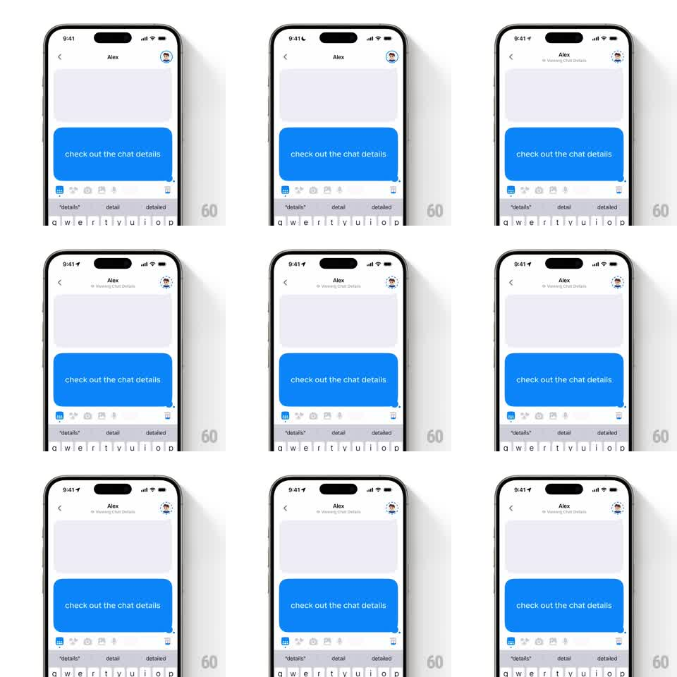

Media
Frame-by-frame

Rebuild this animation 1:1: Honk's viewing indicator - the friend's avatar in the chat header gets a rotating dashed circular outline while "Viewing Chat Details" appears under their name, signaling a live presence state.

Rebuild this animation 1:1: Honk's viewing indicator - the friend's avatar in the chat header gets a rotating dashed circular outline while "Viewing Chat Details" appears under their name, signaling a live presence state.
## Integration
Integration: stack-agnostic spec - springs given as stiffness/damping, timed motions as duration + curve; map every value to your framework and animation library of choice.
## Scene
Honk chat with "Alex": back chevron left, name centered, friend's avatar top-right, blue message bubble ("check out the chat details") and keyboard below. When active, the header gains a gray subtitle "Viewing Chat Details" under "Alex", and the avatar is ringed by a dashed circle that rotates continuously.
## Motion spec
Pattern: rotating dashed presence ring.
- Activation: the subtitle fades in under the name (200ms, slight translateY -4pt); the dashed ring draws around the avatar (dash pattern appears via stroke trim, 250ms).
- The ring rotates at a constant slow speed (one revolution ~4s, linear) - dashes march around the avatar.
- Dash spec: 2pt stroke, ~6pt dashes with ~4pt gaps, dark gray, ring radius 4pt beyond the avatar.
- Deactivation: the ring fades (200ms) and the subtitle slides away; the header returns to name-only.
## Calibration
- Rotation is uniform - no easing; the dashes themselves carry the motion.
- The ring is grayscale; it must not be mistaken for a colored online dot.
## Reduced motion
Static dashed ring (no rotation); subtitle appears without motion.
## Don't miss
- The ring encircles the avatar only - it never touches the name or chevron.
- The avatar photo stays fixed; only the dashes move.